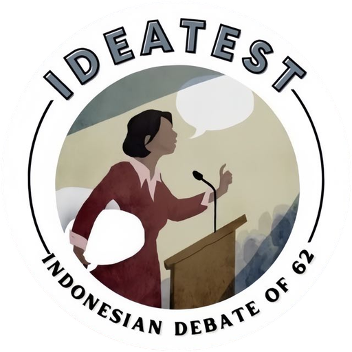

Ekstrakurikuler Debat SMAN 62 JakartaIDEATEST
Indonesia Debate of Sixty Two
Bank mosi dengan bedah argumen, dan materi belajar debat untuk melatih berpikir kritis.
Debat bukan tentang siapa yang paling keras berteriak, melainkan siapa yang paling logis membawa solusi.
Gagasan menjadi kuat bukan karena disepakati semua orang, tetapi karena sanggup bertahan saat diuji.
Berpikir kritis
Memeriksa setiap klaim sebelum menerimanya, termasuk klaim sendiri.
Berani berbeda
Tidak setuju adalah bagian dari proses, selama disampaikan dengan hormat.
Berbasis bukti
Argumen berdiri di atas alasan logis, bukti yang bisa dirujuk, dan contoh nyata.
Adil mendengar
Menjadi penutur yang jernih sekaligus pendengar yang adil.
Mulai dari Mana?
Dua jalan masuk: mulai dari mosi yang sudah dibedah, atau pelajari dulu cara menyusun argumennya.
Briefing
Komunitas
IDEATEST dijalankan pengurus kelas XI yang terbagi dalam divisi Diklat, Perlombaan, dan PDD.
0Pengurus
0Divisi